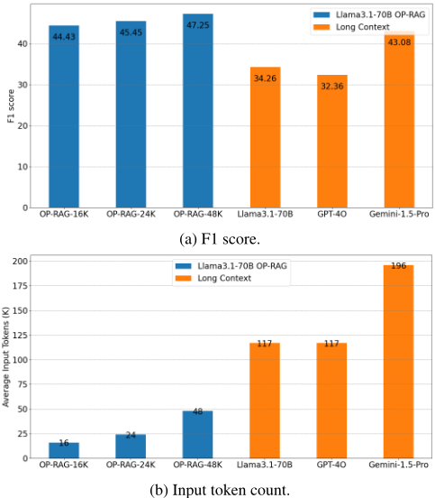
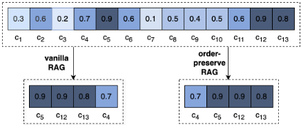
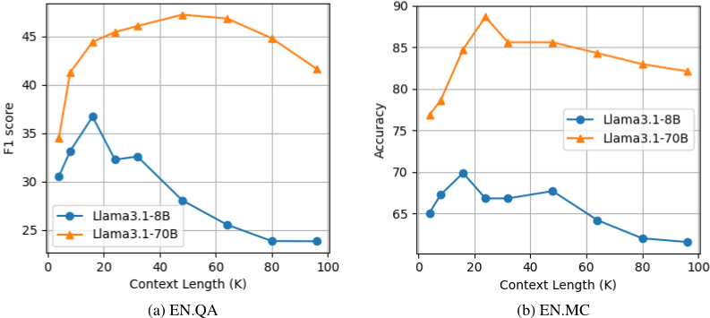
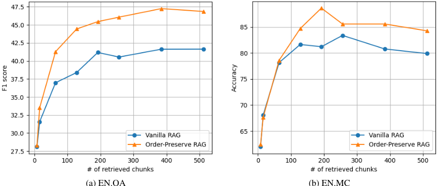

在长上下文 LLM 时代为 RAG 辩护
论文回应'长上下文 LLM 出现后 RAG 是否已过时'的争论：作者指出超长上下文会使模型对相关信息的注意力被稀释，反而降低答案质量。方法上提出 OP-RAG，在检索 top-k chunks 后不按相似度降序、而是按其在原文中的出现顺序排列后送入 LLM，并系统刻画了'检索块数增加、质量先升后降'的倒 U 型曲线。在 ∞Bench 的 EN.QA/EN.MC 上，Llama3.1-70B 仅用 16K-48K 检索 token 即达到 44.43-47.25 F1，显著超过其用满 128K 上下文的 34.26 F1，也优于 GPT-4O、Gemini-1.5-Pro 及 SELF-ROUTE 路由方案。核心结论：高效检索加聚焦上下文优于暴力长上下文，RAG 在长上下文时代依然必要且更具性价比。
长上下文 LLM（128K 甚至 1M 窗口）普及后，已有研究（Li et al., 2024）结论称长上下文直接输入一致优于 RAG，RAG 似乎不再必要。论文要重新检验这一结论，解决超长上下文中相关信息被稀释、无关信息干扰导致答案质量下降的问题，证明设计良好的 RAG 能以更少 token 取得更高答案质量。
提出 order-preserve RAG（OP-RAG）：将长文档均匀切分为 128 token 的非重叠 chunks，用 BGE-large-en-v1.5 计算 query 与 chunk embedding 的 cosine 相似度并取 top-k；与传统 vanilla RAG 按相似度降序排列不同，OP-RAG 保留 chunks 在原文中的先后顺序再拼接进上下文。同时通过消融实验刻画检索块数与答案质量的倒 U 型关系，为不同模型寻找质量-成本最优的上下文长度。
EN.QA（∞Bench）上，Llama3.1-70B 仅用 16K 检索 token 达 44.43 F1；无 RAG 时其用满 128K 上下文仅 34.32 F1，GPT-4O 为 32.36 F1，Gemini-1.5-Pro 为 43.08 F1
主实验中，Llama3.1-70B 无 RAG 平均输入 117K token 仅得 34.26 F1，OP-RAG 用 48K token 达 47.25 F1
EN.QA 检索 128 chunks 时，vanilla RAG 38.40 F1 vs OP-RAG 44.43 F1；EN.MC 检索 192 chunks 时，vanilla RAG 81.22 accuracy vs OP-RAG 88.65 accuracy
Llama3.1-8B 在 EN.QA 与 EN.MC 均于 16K 上下文达峰；Llama3.1-70B 在 EN.QA 48K、EN.MC 32K 达峰，呈倒 U 型曲线
以更少输入 token 显著优于 SELF-ROUTE（Li et al., 2024）自反思路由机制
与 Li et al. (2024) '长上下文 LLM 一致优于 RAG' 的结论正面相反，证明保序 RAG 可胜过纯长上下文方案；核心区别在于检索后按原文顺序而非相似度降序组织上下文，并给出检索块数-质量的倒 U 型经验规律（而非'检索越多越好'），同时以更少 token 超过 SELF-ROUTE 路由方案。
相关度级别：high
命中能力域：3.1 上下文工程与记忆 | 3.5 评测与可靠使用
理由：直接命中 3.1 上下文工程与记忆的核心技术：RAG/检索增强与结构化上下文组织。论文证明检索后 chunks 的排列顺序（保序 vs 相似度降序）与检索数量对答案质量影响巨大，是团队知识库问答与长文档处理可直接复用的上下文组织策略。同时命中 3.5 评测与可靠使用：以更少 token 达到更高质量属于成本与效率优化的实证研究，其'检索块数-质量'曲线扫描方法也可纳入团队 RAG 评测体系，为每个生成模型确定最优上下文预算。
建议动作：深入精读并做内部分享
arXiv:2409.01666v1 [cs.CL] 2024年9月3日
Tan Yu NVIDIA 美国加利福尼亚州圣克拉拉 tayu@nvidia.com Anbang Xu NVIDIA
美国加利福尼亚州圣克拉拉 anbangx@nvidia.com
检索增强生成（RAG）克服了早期大语言模型（LLM）上下文长度受限的问题，在过去一直是基于上下文的答案生成的可靠解决方案。最近，长上下文 LLM 的出现使模型能够纳入更长的文本序列，这使得 RAG 的吸引力有所下降。近期研究表明，在长上下文应用中，长上下文 LLM 的表现显著优于 RAG。与现有那些更青睐长上下文 LLM 而非 RAG 的工作不同，我们认为 LLM 中极长的上下文会导致对相关信息的关注度减弱，并可能导致答案质量的潜在下降。本文重新审视了 RAG 在长上下文答案生成中的作用。我们提出了一种保序检索增强生成（OP-RAG）机制，显著提升了 RAG 在长上下文问答应用中的性能。采用 OP-RAG 时，随着检索块数量的增加，答案质量先上升后下降，形成一条倒 U 形曲线。存在一些最佳点，在这些点上，OP-RAG 能够以远少于将整个上下文作为输入的长上下文 LLM 所需的 token 数量，获得更高的答案质量。在公开基准测试（benchmark）上的大量实验证明了我们所提出的 OP-RAG 的优越性。
由于早期一代大语言模型（LLM）的上下文窗口长度有限（例如 4096），检索增强生成（RAG）（Guu et al., 2020; Lewis et al., 2020）成为处理大规模上下文语料库不可或缺的选择。由于答案质量在很大程度上依赖于检索模型的性能，在设计 RAG 系统时，人们投入了大量精力来提升检索的召回率/精确率。
近来，最先进的 LLM 已支持长得多的上下文窗口。例如，GPT4O（OpenAI, 2023）、Claudi-3.5（Anthropic, 2024）、Rama Akkiraju NVIDIA Santa Clara, California United States rakkiraju@nvidia.com Llama3.1（Meta, 2024b）、Phi-3（Abdin et al., 2024）以及 Mistral-Large2（AI, 2024）均支持 128-K 上下文。Gemini-1.5-pro 甚至支持 1M 的上下文窗口。长上下文 LLM 的近期涌现自然引出了一个问题：在长上下文 LLM 时代，RAG 是否还有必要？Li et al. (2024) 最近系统性地比较了 RAG 与长上下文（LC）LLM（不使用 RAG），并证明 LC LLM 在答案质量方面始终优于 RAG。

在本工作中，我们重新审视了 RAG 在长上下文答案生成中的有效性。我们观察到，检索块在 LLM 上下文中的排列顺序对答案质量至关重要。与传统 RAG 将检索块按相关性降序排列不同，我们提出保留检索块在原始文本中的顺序。我们的实验表明，所提出的保序机制显著提升了 RAG 的答案质量。
与此同时，使用所提出的保序 RAG，随着检索块数量的增加，答案质量先上升后下降。这是因为，检索块越多，模型能够获取的潜在相关信息就越多，从而提高了检索到生成高质量答案所需正确上下文的几率。然而，随着检索块的增多，引入无关或干扰信息的可能性也随之增大。这些过多的信息会使模型产生混淆，导致答案质量下降。因此，这里的权衡在于：通过检索更多上下文来提升召回率，与通过限制干扰信息来维持精确率之间。最优点就是相关信息与无关信息之间达到平衡、从而使答案质量最大化的位置。超过该点之后，引入过多无关信息会使模型性能下降。这也解释了将整个长上下文直接作为 LLM 输入的方法性能欠佳的原因。
与 Li et al. (2024) 的结论不同，借助所提出的保序机制，RAG 相比仅依赖长上下文 LLM 的对应方法取得了更高的答案质量。如图 4a 所示，在 ∞ Bench（Zhang et al., 2024）的 En.QA 数据集上，仅使用 16K 检索 token，我们使用 Llama3.1-70B 取得了 44.43 的 F1 分数。相比之下，在不使用 RAG 的情况下，充分利用 128K 上下文的 Llama3.1-70B 仅取得 34.32 的 F1 分数，GPT-4O 仅取得 32.36 的 F1 分数，而 Gemini-1.5-Pro 仅取得 43.08 的 F1 分数（按 Li et al. (2024) 的评估）。也就是说，即使输入长度显著减少，RAG 仍能取得更高的 F1 分数。
检索增强生成。通过将外部知识作为上下文纳入，检索增强生成（Retrieval-Augmented Generation, RAG）（Guu et al., 2020; Lewis et al., 2020; Mialon et al., 2023）使语言模型能够获取最新且具体的信息，从而减少幻觉并提升事实准确性。在长上下文大语言模型（LLM）时代之前，RAG 是克服短上下文窗口限制的一种有前景的解决方案。

长上下文 LLM。为了支持语言模型处理长序列，许多研究工作致力于提升自注意力（self-attention）的计算效率（Choromanski et al., 2020; Zaheer et al., 2020; Tay et al., 2020; Dao et al., 2022; Dao, 2024），以及增强位置编码（positional encoding）的可扩展性（Press et al., 2021; Sun et al., 2022; Chen et al., 2023）。近来，GPT-4O（OpenAI, 2023）、Gemini-1.5-Pro（Reid et al., 2024）、Claudi-3.5（Anthropic, 2024）、Grok2（xAI, 2024）和 Llama3.1（Meta, 2024a）等旗舰 LLM 已支持极大的上下文。随着长上下文 LLM 的出现，RAG 不再是长上下文问答任务中不可或缺的模块。最近，Li et al. (2024) 得出结论认为，不使用 RAG 的长上下文方法能够显著优于 RAG。与 (Li et al., 2024) 的结论不同，在本工作中，我们证明所提出的 order-preserve RAG 能够胜过不使用 RAG 的长上下文 LLM。
我们将长文本上下文（例如一篇长文档）记为 d。我们将 d 顺序且均匀地切分为 N 个块（chunk），记为 {c_i}_{i=1}^N。索引 i 表示块 c_i 在 d 中的先后顺序。也就是说，c_{i-1} 表示位于 c_i 之前的块，而 c_{i+1} 表示紧随 c_i 之后的块。给定查询 q，我们通过计算 q 的嵌入（embedding）与 c_i 的嵌入之间的余弦相似度，得到块 c_i 的相关性得分：

其中 cos(·,·) 表示余弦相似度函数，emb(·) 表示嵌入函数。
我们检索与查询相似度得分最高的前 k 个块，并将这前 k 个块的索引记为 J = {j_i}_{i=1}^k。我们保留这些块在原始长上下文 d 中的顺序，也就是说，我们约束
图 2 可视化了原始 RAG（vanilla RAG）与所提出的 order-preserve RAG 之间的差异。与原始 RAG 按相似度降序排列块不同，所提出的 order-preserve RAG 保留了块在原始文档中的顺序。
我们在专门为长上下文问答（QA）评估而设计的 ∞ Bench（Zhang et al., 2024）基准测试（benchmark）的 EN.QA 和 EN.MC 数据集上开展实验。具体而言，En.QA 由 351 个人工标注的问答对组成。En.QA 中的长上下文平均包含 150,374 个单词。我们使用 F1-score 作为 En.QA 评估的指标。EN.MC 由 224 个问答对组成，其标注方式与 En.QA 类似，但每个问题都提供了四个答案选项。En.MC 中的长上下文平均包含 142,622 个单词。我们使用准确率作为 En.QA 评估的指标。我们注意到还有一个名为 LongBench（Bai et al., 2023）的基准测试。然而，LongBench 的平均上下文长度低于 20K 个单词，不足以评估近期支持 128K token 上下文窗口大小的长上下文大语言模型（LLM）。
我们在所有数据集上将块（chunk）大小设置为 128 个 token。块之间互不重叠。默认情况下，我们使用 BGE-large-env1.5（Xiao et al., 2023）来提取查询和块的嵌入（embedding）。
上下文长度的影响。我们评估了上下文长度对所提出的保序 RAG（order-preserve RAG）性能的影响。由于每个块包含 128 个 token，因此上下文长度为 128m，其中 m 是作为生成答案的上下文而被检索出的块的数量。如图 3 所示，随着上下文长度的增加，性能起初会提升。这是因为更多的上下文可能有更大的机会覆盖到相关块。然而，随着上下文长度进一步增加，答案质量会下降，因为更多不相关的块被用作干扰。具体而言，Llama3.1-8B 模型在 EN.QA 数据集和 EN.MC 数据集上均在上下文长度为 16K 时达到性能峰值，而 Llama3.1-70B 模型的最佳性能则在 EN.QA 上于 48K、在 EN.MC 上于 32K 时取得。Llama3.1-70B 的峰值点比 Llama3.1-8B 模型出现得更晚，这可能是因为更大规模的模型具有更强的能力来区分相关块与

不相关的干扰。
保序 RAG 与原始 RAG（vanilla RAG）的对比。如图 4 所示，当检索的块数量较少（例如 8 个）时，所提出的保序 RAG 相对于原始 RAG 的优势并不明显。相反，当检索的块数量较大时，我们的保序 RAG 显著优于原始 RAG。具体而言，在 EN.QA 数据集上，当检索的块数量为 128 时，原始 RAG 仅取得 38.40 的 F1 分数，而我们的保序 RAG 取得 44.43 的 F1 分数。在 EN.MC 数据集上，检索 192 个块时，原始 RAG 仅取得 81.22 的准确率，而我们的保序 RAG 获得 88.65 的准确率。
我们将所提出的保序 RAG 与两类基线方法进行比较。第一类方法使用不带 RAG 的长上下文 LLM。如表 1 所示，在不使用 RAG 的情况下，LLM 需要将大量 token 作为输入，这既低效又成本高昂。相比之下，所提出的保序 RAG 不仅显著减少了 token 数量，还显著提升了答案质量。例如，使用 Llama3.1-70B 模型时，不使用 RAG 的方法在 EN.QA 上仅取得 34.26 的 F1 分数，其平均输入为 117K 个 token。相比之下，我们的 OP-RAG 仅以 48K 个 token 作为输入便取得了 47.25 的 F1 分数。第二类基线采用 SELF-ROUTE 机制（Li et al., 2024），该机制基于模型自我反思将查询路由到 RAG 或长上下文 LLM。如表 1 所示，我们的方法在 LLM 输入中使用少得多的 token 的情况下仍显著优于基线方法。
| Method.Method | EN.QA.F1 Score | EN.QA.Tokens | EN.MC.Acc. | EN.MC.Tokens |
|---|---|---|---|---|
| Long-context LLM w/o RAG | Long-context LLM w/o RAG | Long-context LLM w/o RAG | Long-context LLM w/o RAG | Long-context LLM w/o RAG |
| Llama3.1-70B | 34 . 26 | 117K | 71 . 62 | 117K |
| GPT-4O | 32 . 36 | 117K | 78 . 42 | 117K |
| Gemini-1.5-Pro | 43 . 08 | 196K | 85 . 57 | 188K |
| SELF-ROUTE (Li et al., 2024) | SELF-ROUTE (Li et al., 2024) | SELF-ROUTE (Li et al., 2024) | SELF-ROUTE (Li et al., 2024) | SELF-ROUTE (Li et al., 2024) |
| GPT-4O | 34 . 95 | 85K | 77 . 29 | 62K |
| Gemini-1.5-Pro | 37 . 51 | 83K | 76 . 86 | 62K |
| Llama3.1-70B order-preserve RAG (ours) | Llama3.1-70B order-preserve RAG (ours) | Llama3.1-70B order-preserve RAG (ours) | Llama3.1-70B order-preserve RAG (ours) | Llama3.1-70B order-preserve RAG (ours) |
| OP-RAG-16K | 44 . 43 | 16K | 84 . 72 | 16K |
| OP-RAG-24K | 45 . 45 | 24K | 88 . 65 | 24K |
| OP-RAG-48K | 47 . 25 | 48K | 85 . 59 | 48K |
| Method.Method | EN.QA.F1 Score | EN.QA.Tokens | EN.MC.Acc. | EN.MC.Tokens |
在本文中，我们重新审视了检索增强生成（RAG）在长上下文语言模型（LLM）时代的作用。尽管近期的趋势因长上下文 LLM 能够纳入大篇幅文本序列而更青睐它们而非 RAG，但我们的研究对这一观点提出了挑战。我们认为，LLM 中极长的上下文可能导致对相关信息的关注减弱，进而可能降低问答任务中的答案质量。为解决这一问题，我们提出了保序检索增强生成（OP-RAG）机制。我们在公开基准测试上开展的大量实验表明，OP-RAG 显著提升了 RAG 在长上下文问答应用中的性能。OP-RAG 的优越性能表明，高效的检索与聚焦式的上下文利用能够胜过处理极长上下文的蛮力方法。